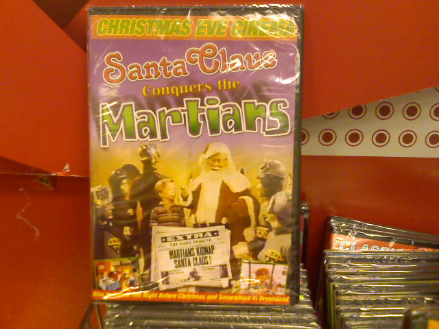
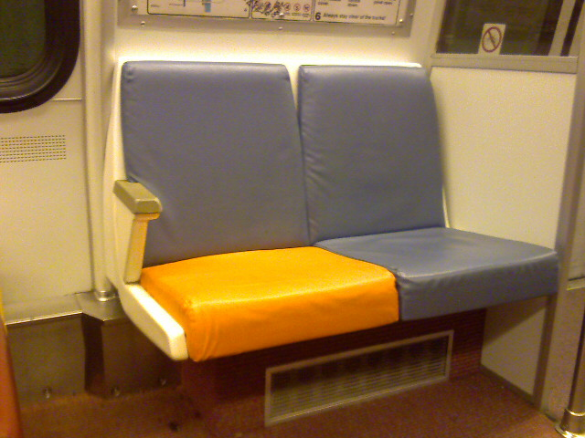

November 26th, 2007
Much of our digital information is stored and accessed through online accounts, most of which only offer a standard username and password authentication process. While this single factor authentication is sufficient for most cases, two-factor authentication offers enhanced security. But before I go any further, lets make clear what single-factor and two-factor authentication actually are.
In order to authenticate who you are online, you need to demonstrate one or more of the following factors:
- “Something you know”, such as a password or PIN.
- “Something you have”, such as a mobile phone, credit card or hardware security token.
- “Something you are”, such as a fingerprint, a retinal scan, or other biometric.
Most online systems require only something you know, usually a username and password combination. The weakness of this system is the password because if it is too short or easily guessable then an attacker can brute force, or systematically guess every possible combination, until they have access and compromise your account. A password that is too long and convoluted can be a burden to remember though harder to guess by a third party. Adding another authentication factor will greatly increase your security as well as making the login process less cumbersome.
This is where VeriSign comes in. They have developed an identity protection service that gives you access to a random, one-time use password that piggybacks on your existing username and password credentials. The device used to deliver the 6-digit code is the size of a credit card and easily fits into a wallet. With the press of a button, a new set of numbers will be generated for you to authenticate with when logging in to protected sites.
The system isn’t perfect as the card costs $54 and only works with members of the VeriSign Identity Protection Network. Right now that network includes eBay, Paypal, and VeriSigns own OpenID service. Keep in mind this is still in testing mode. With online identity protection becoming a bigger issue, I can see this growing and including more members in the near future.
Some sites that I would really like to see participating in this program would be Amazon.com, GMail, and my bank USAA.com. If I relied more heavily on PayPal and eBay for my income I would definitely sign up, but for now I will sit out and wait for more sites to join before plunking down the $50.
For more information about two-factor authentication check out episode #94 of Steve Gibson’s Security Now Podcast.
Posted at 11:53 pm in Gadgets, Random Musings, Web | 1 Comment »
November 25th, 2007

Found in the dollar section at Target.
Posted at 5:30 pm in Mobile Post | 2 Comments »
November 25th, 2007
My 60 GB Creative Zen Vision:M recently died and I have bee looking for a worthy replacement for the past month. The 2nd generation Zune, known as the Zune 80, is the best digital media player out there. I started looking online for a site that has the player in stock and came out with nothing. Then on a whim I looked for Target stores in my area that might have a Zune 80 available and there was only one left at the Target at Route 198 and 295. The customer service rep I talked with said they weren’t selling that well, HA! I rushed out and picked it up.

You are probably thinking that is where the story ends? I got the player I wanted and everything is grande! But this is the first time I have an item that is in frenzied demand. Such a high demand that people are willing to pay more than retail in order to get it before it comes back in stock, which could take 2-6 weeks. So I listed it on Amazon and made a post on the DC area Craigslist with a hearty markup. If it doesn’t sell in a couple of days, then I will open it up and use it, but if I can find a buyer I have no problem waiting a couple weeks to get a Zune 80 at the regular price.
Posted at 1:46 pm in Gadgets, Local | 2 Comments »
November 21st, 2007
The trees by my apartment are producing some vivid fall colors even though it is quite mild on the day before Thanksgiving.
Posted at 10:30 am in Mobile Post | No Comments »
November 17th, 2007
I just happened to glance down at my odometer on my 1994 Mercury Villager where I noticed it read 122,222. I am also low on gas.
Posted at 7:00 pm in Mobile Post | No Comments »
November 16th, 2007
Sony sent our office a birthday cake celebrating the 1 year anniversary of the PS3. The picture is one of those sugar print outs. The cake tastes a bit sour kind of like the price of this outrageous gaming machine. Unfortunately they didn’t send an actual PS3 to sway my opinion. Nuts.
Posted at 2:00 pm in Mobile Post | 13 Comments »
November 15th, 2007
The holidays are fast approaching and that generally means it is time to start eating some treats. NorthPole.com has a zillion recipes for things like cookies, fudge & candy, and cakes to keep your taste buds fresh and happy this winter season. Everything is easy to follow with ingredients, measurements, and thorough instructions even a cooking scrooge like myself could follow along and bake up a batch. Now the hardest part will be going through the lists while picking a reasonable amount of cookies to prepare.
Posted at 7:35 am in Random Musings | No Comments »
November 14th, 2007

An interesting color combination on my train this morning. Chroma inspiration from the real world.
Posted at 10:30 am in Mobile Post | No Comments »
November 13th, 2007
Rands knows nerds and what it takes to live with them. It sounds like his post The Nerd Handbook comes from first hand experience but it describes me pretty well. Take the opening sentence:
“A nerd needs a project because a nerd builds stuff. All the time. Those lulls in the conversation over dinner? That’s the nerd working on his project in his head.”
I thought everyone constantly mulled over projects in their head?
Rand goes into further details about a nerd’s relation to the computer, why we nerds build little caves to be tucked away from society, our quest for absorbing information, and why nerds generally dislike social situations. Yup, I can relate to all of this and if you ever wanted to get a peak inside me to see how I tick, then I suggest cracking open The Nerd Handbook.
Posted at 11:47 pm in Inspiration, Random Musings | No Comments »
November 13th, 2007
Last Saturday night I had the pleasure of photographing a fashion show hosted by the Filipino Cultural Association, Chinese Culture Club/Chinese Student Association, and the Korean Student Association at the University of Maryland. My Sigma 70-200mm came in handy as their was very little light (even though there was a bright spot light on the models) forcing me to shoot at 800 ISO to get shutter speeds fast enough to freeze the action. There were three other DSLR shooters there that night, and they all had external flashes.
Equipment aside I was happy with the photos I captured from a seat in the front row at the corner of the runway. I snapped 540 pictures filling up my two compact flash cards for a total of 1.5 gigabytes. Next weekend I’m going to be shooting flag football games all day Sunday. I think we’re going to need a bigger boat card.
You can see the keepers on Facebook (1,2,3) but here are some of my top picks:
Posted at 12:57 am in Local, Photo | 1 Comment »